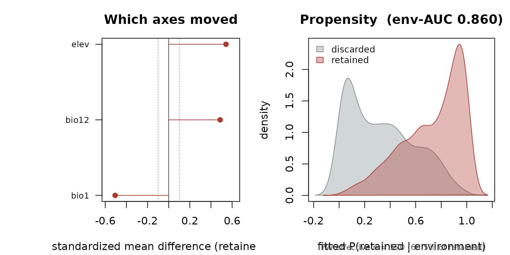

The question
You have occurrence records. Some have good coordinates and some do not. You are about to throw the bad ones away, because that is what one does.
The question this package asks is not which records to throw away. It is: once you have thrown them away, what did you do to the environmental distribution your model is about to learn from?
If record quality is unrelated to the environment, the answer is nothing, and you can stop reading. If it is not — and it usually is not, because georeferencing precision depends on terrain and access and era, all of which vary across environmental space — then filtering has quietly reweighted environmental space, and the model will learn a displaced niche.
A worked example
sim_occ() simulates records in river basins. Elevation
carries a basin-level random effect; temperature and precipitation
follow elevation; and coordinate uncertainty is generated to depend on
elevation too, so that quality and environment are coupled through
terrain, as they are in real data.
d <- sim_occ(n = 1500, seed = 7)
str(d[, c("bio1", "bio12", "elev", "basin", "coord_uncertainty")])
#> 'data.frame': 1500 obs. of 5 variables:
#> $ bio1 : num 15.2 15.8 20.4 15.5 13.8 ...
#> $ bio12 : num 776 850 593 701 885 ...
#> $ elev : num 522.3 503.3 -47.8 389.8 492.7 ...
#> $ basin : Factor w/ 20 levels "B01","B02","B03",..: 10 19 7 2 15 8 3 8 15 8 ...
#> $ coord_uncertainty: num 67 83 1417 7 52 ...It ships four filters, and the whole point of the object is that they should get different verdicts.
A filter that does nothing
keep_random drops records at random. This is the
negative control: an audit that flags it is firing indiscriminately and
is worthless.
env <- c("bio1", "bio12", "elev")
audit(d, quality = "keep_random", env = env, spatial_block = "basin")
#> Warning: The environmental propensity model is anti-predictive out of fold (AUC
#> = 0.442). That is a sign of misspecification, not of a benign filter: the
#> fitted P(r = 1 | e) and therefore ipw_weights() cannot be trusted here. Try
#> control = audit_control(quadratic = TRUE), or reduce the number of
#> environmental predictors (pca = TRUE).
#>
#> <sdm_audit>
#> 1,500 records, 814 retained (54.3%) by `keep_random`
#> energy distance 0.777 (permutation p = 0.958, 999 perms)
#> propensity env-AUC 0.442 (blocked by `basin` cross-validation)
#> IPW effective n 813 (99.9% of retained records)
#> verdict: BENIGN
#>
#> summary() for the reportable version.env-AUC sits at 0.5. Retention carries no environmental
information, so filtering and reweighting will point the same way, and
the filtering decision is not carrying your result.
One caveat, and it is in the printed advice for a reason: a null here is a failure to resolve structure, not a proof of its absence. With few spatial blocks it is a cross-validation null and nothing more.
A filter that does something
keep_precision drops records with coarse coordinates —
and coordinate precision tracks elevation. This is the ordinary case: a
filter defined on metadata that projects onto the environment without
anyone intending it to.
a <- audit(d,
quality = "keep_precision", env = env,
metadata = c("year", "source"), spatial_block = "basin"
)
summary(a)
#>
#> Audit of quality filter `keep_precision`
#> ------------------------------------------------------------------
#> 1,500 records with complete environment; 833 retained (55.5%).
#>
#> 1. Which axes moved
#> elev smd +0.542 KS 0.544 log-var-ratio -0.001 *
#> bio1 smd -0.506 KS 0.491 log-var-ratio +0.003 *
#> bio12 smd +0.486 KS 0.481 log-var-ratio -0.003 *
#> (* |smd| >= 0.10. Positive smd: retained records sit HIGHER on that axis.)
#>
#> 2. Did the niche move at all
#> energy distance 122.663, permutation p = <= 0.001 (999 permutations, n = 833 per sample)
#> NOTE: p is at the resolution floor of the permutation test. Raise `n_perm`
#> before reporting this number, or you are reporting the test, not the data.
#>
#> 3. Is the structure environmental, or is it provenance
#> env-AUC 0.860 (blocked by `basin` CV; 0.5 = retention is environmentally unstructured)
#> metadata-AUC 0.619 (usually high: the filter was DEFINED on metadata;
#> this is a sanity check, not a finding)
#> env + metadata 0.895
#> incremental env +0.276 (environmental structure surviving provenance)
#>
#> 4. Can it be undone
#> IPW effective sample size 570 = 68.5% of the retained records
#> the same, without trimming: 415 = 49.8%
#> lowest retention probability among retained records: 0.03895
#> ------------------------------------------------------------------
#> VERDICT: STRUCTURED
#> The filter moved the niche, and positivity supports undoing it.
#> Fit both ends of the bracket -- the filtered model, and the
#> same model with ipw_weights() -- and report the spread. They
#> move the niche in opposite directions and which end is correct
#> depends on whether coordinate error is directed, which your
#> data cannot tell you. A conclusion that survives the whole
#> bracket is safe; one that does not is a choice you made, not a
#> result you found.
#> ------------------------------------------------------------------
#> These thresholds are conventions, not truths (see audit_control).
#> Report the numbers, not only the verdict.Read it in order.
Which axes moved. The retained records sit higher, colder and wetter. That is not a fact about the species; it is a fact about where a coordinate can be pinned down.
Did the niche move at all. The energy distance rejects the null that the retained records are a random environmental subsample.
Environmental, or provenance? This is what
metadata buys you. A metadata model recovers retention
well, which is unsurprising — the filter was a metadata rule.
The number that matters is the incremental one: environmental structure
that survives controlling for who collected the record and when. If it
vanished, the shift would be a provenance artefact. It does not
vanish.
Can it be undone? The effective sample size of the inverse-propensity weights is a healthy fraction of the retained records, so reweighting is supported by the data here.
plot(a)
Both ends of the bracket
The verdict is structured, and the advice is to fit
both corrections.
w_ipw <- ipw_weights(a) # undoes the selection
w_trust <- trust_weights(a) # soft version of the filter
c(ipw_ess = attr(w_ipw, "ess"), retained = a$n_high)
#> ipw_ess retained
#> 570.447 833.000These do not disagree by accident. Filtering downweights the environments where low-quality records concentrate; inverse-propensity weighting upweights the rare retained records in those same environments, to undo the selection. They move the niche in opposite directions and bracket the truth between them.
Which end is right depends on whether coordinate error is directed — whether mislocated records are pushed systematically toward particular environments, or merely scattered — and that is not identifiable from occurrence data. Fitting with one set of weights and reporting the result commits your analysis to one end of a bracket you never measured.
Fit both. Report the spread.
The filter that hides
keep_outlier is a Mahalanobis-distance screen on the
environment: it removes records that sit far out in environmental space.
Screens of this kind are standard, and they look conservative.
They are the opposite of conservative, and they are almost invisible.
o <- audit(d, quality = "keep_outlier", env = env, spatial_block = "basin")
o$shift[, c("variable", "smd", "log_vr")]
#> variable smd log_vr
#> 2 bio12 -0.02276567 -0.6681470
#> 3 elev -0.01301121 -0.6517036
#> 1 bio1 0.01237728 -0.6510056Every standardized mean difference is near zero. The filter is symmetric: it trims both tails, so it moves no mean. An audit built on mean shifts would report this filter as benign, and an energy test may well fail to reach significance on it.
Look at the variance ratio instead. The retained records have collapsed variance on every axis. The filter has not moved the niche — it has shrunk it, and a model fitted on the survivors will underestimate the environmental breadth of the species.
The propensity model catches it, but only because it carries quadratic terms:
lin <- audit(d,
quality = "keep_outlier", env = env, spatial_block = "basin",
control = audit_control(quadratic = FALSE)
)
#> Warning: The environmental propensity model is anti-predictive out of fold (AUC
#> = 0.398). That is a sign of misspecification, not of a benign filter: the
#> fitted P(r = 1 | e) and therefore ipw_weights() cannot be trusted here. Try
#> control = audit_control(quadratic = TRUE), or reduce the number of
#> environmental predictors (pca = TRUE).
c(linear = lin$propensity$auc_env, quadratic = o$propensity$auc_env)
#> linear quadratic
#> 0.3977086 0.7783753The linear model is not merely uninformative here. Out of fold it is
anti-predictive: it discriminates in the wrong direction,
because the only linear signal it can find is fold-specific noise. That
is why the shift screen in this package tests |AUC − 0.5|
rather than AUC > 0.6. A one-sided test would have
looked at an AUC of 0.42, concluded “no structure”, and told you your
niche-deflating filter was benign.
Keep quadratic = TRUE.
The filter that cannot be undone
keep_strict is a near-deterministic certification rule:
records below a terrain threshold are almost never certified. A handful
are anyway.
s <- audit(d, quality = "keep_strict", env = env, spatial_block = "basin")
s$flag
#> [1] "positivity-limited"
c(
ess_trimmed = s$positivity$ess_ratio,
ess_untrimmed = s$positivity$ess_ratio_untrimmed
)
#> ess_trimmed ess_untrimmed
#> 0.020072749 0.002725448The shift is real and large. But the correction is carried by a few records with enormous weights, because there are environments the filter emptied, and no weight can conjure records back into an empty environment. This is a positivity failure, and it is the limit of what reweighting can do.
Notice how far apart the trimmed and untrimmed effective sample sizes are. Trimming the weights is what stops those few records from carrying the whole correction — which means “the effective sample size” is not a well-defined number until you say whether the weights were trimmed first. Both are reported here for that reason. If you quote one, say which.
Here, the right move is not to weight and move on. It is to report the filter-to-IPW bracket, and to say plainly that the data cannot resolve which end of it is correct.
Bringing your own data
# from a continuous coordinate-uncertainty field, as GBIF supplies it
occ$high <- as_quality(occ$coordinateUncertaintyInMeters, threshold = 100)
# or from CoordinateCleaner's .summary column
occ$high <- as_quality(cc_output)
audit(occ,
quality = "high",
env = c("bio1", "bio12", "bio15"),
metadata = c("year", "institutionCode"),
spatial_block = "basin"
)When quality is continuous there is no single correct cut, and auditing at one threshold answers a question you chose rather than a question about your data. Sweep it. If the shift grows as the cut gets stricter, then cleaning harder is making the bias worse, and there is no bias-free threshold to find.